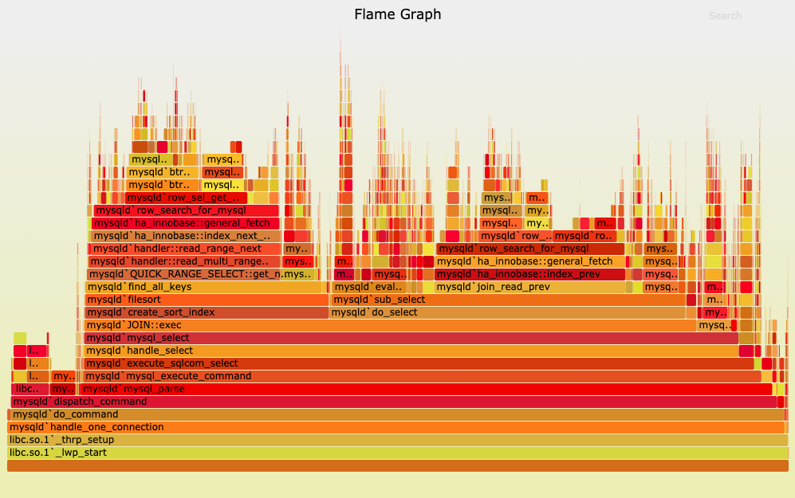

Profiling Jupyter Notebook Code with py-spy
Jupyter notebooks are great for interactive development and visualization, but it’s hard to get nice code profiling visualizations. Jake VanderPlas has a great exceprt in his Python Data Science Handbook with examples of how to time and profile code in a Jupyter notebook. These work great, but the text output isn’t always as intuitive as visualizations like flame graphs. They give you a hierarchical view of which lines of code at all depths of the call stack are contributing the most to the compute time. Not only that, they’re interactive SVGs! Click on the image in the flame graphs link and you can check out the interactivity yourself. You can zoom into specific parts of the call stack and search for terms, and hover over blocks to see the full description at the top. As far as I can tell, there are ways to get a line-by-line heat map in Jupyter, like this, but you don’t get the full call stack like in a flame graph.
{kind=link}

There’s a fantastic package called py-spy that creates flame graphs, but that works best with .py files. Now we just need a way to get our Jupyter notebook represented as a .py file. There are a couple of options for this. One would be to export the file as a .py file from the File menu of your Jupyter server. Another option is to use Jupytext to create a synced .py file. The benefit of this is that if you make changes in the .py file, they’ll be reflected in the notebook, making it easier to switch between them.
To do this, first install Jupytext with
$ pip install jupytextthen, if you already have a notebook called my_notebook.ipynb, create a synced pair of files with
$ jupytext --set-formats ipynb,py:percent my_notebook.ipynbwhich will create and sync my_notebook.py. Go here a quick reference of some CLI commands available to Jupytext.
From there, you can run py-spy on the my_notebook.py. First, install py-spy if you haven’t already:
$ pip install py-spyThen execute the script with py-spy and output a flame graph to my_flame_graph.svg:
$ py-spy record -o my_flame_graph.svg -- python my_notebook.pyDrag that SVG file onto a web browser and you can explore your flame graph interactively.
Some Caveats
If you have Jupyter magic commands (anything starting with %) or display() invocations, you’ll run into errors executing as a flat .py script. You’ll need to comment out the Jupyter magics, and add a from IPython.display import display if you have display() anywhere.
Please hit me up on Twitter or comment below if you found this useful, ran into issues with any of the steps in this post, or have suggestions about alternative ways to profile code in Jupyter notebooks.